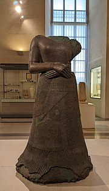

-----------------------------------------------------
A clothes shop or clothes store is any shop which sells items of ready-made clothing. 59 A small shop which sells expensive or designer clothing may be called a boutique. A shop that sells clothes for a narrowly-restricted market such as school uniforms or outdoor sports may be called an outfitter
It is not known when the first clothes shops were opened in Europe. Before the era of ready-made clothes, when clothing was made by tailors or artisans, shops may have sold second-hand clothing. Some ready-made clothes may have been made in the sixteenth century. The number of clothes shops appears to have risen steadily long before the beginning of large-scale industrial manufacture of clothing in the second half of the nineteenth century.
-----------------------------------------------------
Clothing (also known as clothes, garments, dress, apparel, or attire) is any item worn on the body. Typically, clothing is made of fabrics or textiles, but over time it has included garments made from animal skin and other thin sheets of materials and natural products found in the environment, put together. The wearing of clothing is mostly restricted to human beings and is a feature of all human societies. The amount and type of clothing worn depends on gender, body type, social factors, and geographic considerations. Garments cover the body, footwear covers the feet, gloves cover the hands, while hats and headgear cover the head, and underwear covers the private parts.
Clothing serves many purposes: it can serve as protection from the elements, rough surfaces, sharp stones, rash-causing plants, and insect bites, by providing a barrier between the skin and the environment. Clothing can insulate against cold or hot conditions, and it can provide a hygienic barrier, keeping infectious and toxic materials away from the body. It can protect feet from injury and discomfort or facilitate navigation in varied environments. Clothing also provides protection from ultraviolet radiation. It may be used to prevent glare or increase visual acuity in harsh environments, such as brimmed hats. Clothing is used for protection against injury in specific tasks and occupations, sports, and warfare. Fashioned with pockets, belts, or loops, clothing may provide a means to carry things while freeing the hands.
Clothing has significant social factors as well. Wearing clothes is a variable social norm. It may connote modesty. Being deprived of clothing in front of others may be embarrassing. In many parts of the world, not wearing clothes in public so that genitals, breast, or buttocks are visible could be considered indecent exposure. Pubic area or genital coverage is the most frequently encountered minimum found cross-culturally and regardless of climate, implying social convention as the basis of customs. Clothing also may be used to communicate social status, wealth, group identity, and individualism.
Some forms of personal protective equipment amount to clothing, such as coveralls, chaps or a doctor's white coat, with similar requirements for maintenance and cleaning as other textiles (boxing gloves function both as protective equipment and as a sparring weapon, so the equipment aspect rises above the glove aspect). More specialized forms of protective equipment, such as face shields are classified as protective accessories. At the far extreme, self-enclosing diving suits or space suits are form-fitting body covers, and amount to a form of dress, without being clothing per se, while containing enough high technology to amount to more of a tool than a garment. This line will continue to blur as wearable technology embeds assistive devices directly into the fabric itself; the enabling innovations are ultra low power consumption and flexible electronic substrates.
Clothing also hybridizes into a personal transportation system (ice skates, roller skates, cargo pants, other outdoor survival gear, one-man band) or concealment system (stage magicians, hidden linings or pockets in tradecraft, integrated holsters for concealed carry, merchandise-laden trench coats on the black market — where the purpose of the clothing often carries over into disguise). A mode of dress fit to purpose, whether stylistic or functional, is known as an outfit or ensemble.
-----------------------------------------------------
Estimates of when humans began wearing clothes vary from 40,000 to as many as 3 million years ago, but recent studies suggest humans were wearing clothing at least 100,000 years ago.
Recent studies by Ralf Kittler, Manfred Kayser and Mark Stoneking—anthropologists at the Max Planck Institute for Evolutionary Anthropology—have attempted to constrain the most recent date of the introduction of clothing with an indirect method relying on lice. The rationale for this method of dating stems from the fact that the human body louse cannot live outside of clothing, dying after only a few hours without shelter. This strongly implies that the date of the body louse's speciation from its parent, Pediculus humanus, can have taken place no earlier than the earliest human adoption of clothing. This date, at which the body louse (P. humanus corporis) diverged from both its parent species and its sibling subspecies, the head louse (P. humanus capitis), can be determined by the number of mutations each has developed during the intervening time. Such mutations occur at a known rate and the date of last-common-ancestor for two species can therefore be estimated from their frequency. These studies have produced dates from 40,000 to 170,000 years ago, with a greatest likelihood of speciation lying at about 107,000 years ago.
Kittler, Kayser and Stoneking suggest that the invention of clothing may have coincided with the northward migration of modern Homo sapiens away from the warm climate of Africa, which is thought to have begun between 100,000 and 50,000 years ago. A second group of researchers, also relying on the genetic clock, estimate that clothing originated between 30,000 and 114,000 years ago.
Dating with direct archeological evidence produces dates consistent with those of lice. In September 2021, scientists reported evidence of clothes being made 120,000 years ago based on findings in deposits in Morocco.
According to Anthropologists and Archaeologists, the earliest clothing likely consisted of fur, leather, leaves, or grass that was draped, wrapped, or tied around the body. Knowledge of such clothing remains inferential, as clothing materials deteriorate quickly compared with stone, bone, shell, and metal artifacts. Archeologists have identified very early sewing needles of bone and ivory from about 30,000 BC, found near Kostenki, Russia in 1988,[5] and in 2016 a needle at least 50,000 years old from Denisova Cave in Siberia[6] made by Denisovans. Dyed flax fibers that date back to 34,000 BC and could have been used in clothing have been found in a prehistoric cave in Georgia.
-----------------------------------------------------
Several distinct human cultures, including those residing in the Arctic Circle, have historically crafted their garments exclusively from treated and adorned animal furs and skins. In contrast, numerous other societies have complemented or substituted leather and skins with textiles woven, knitted, or twined from a diverse array of animal and plant fibers, such as wool, linen, cotton, silk, hemp, and ramie.
Although modern consumers may take the production of clothing for granted, making fabric by hand is a tedious and labor-intensive process involving fiber making, spinning, and weaving. The textile industry was the first to be mechanized – with the powered loom – during the Industrial Revolution.
Different cultures have evolved various ways of creating clothes out of cloth. One approach involves draping the cloth. Many people wore, and still wear, garments consisting of rectangles of cloth wrapped to fit – for example, the dhoti for men and the sari for women in the Indian subcontinent, the Scottish kilt, and the Javanese sarong. The clothes may be tied up (dhoti and sari) or implement pins or belts to hold the garments in place (kilt and sarong). The cloth remains uncut, and people of various sizes can wear the garment.
Another approach involves measuring, cutting, and sewing the cloth by hand or with a sewing machine. Clothing can be cut from a sewing pattern and adjusted by a tailor to the wearer's measurements. An adjustable sewing mannequin or dress form is used to create form-fitting clothing. If the fabric is expensive, the tailor tries to use every bit of the cloth rectangle in constructing the clothing; perhaps cutting triangular pieces from one corner of the cloth, and adding them elsewhere as gussets. Traditional European patterns for shirts and chemises take this approach. These remnants can also be reused to make patchwork pockets, hats, vests, and skirts.
Modern European fashion treats cloth much less conservatively, typically cutting in such a way as to leave various odd-shaped cloth remnants. Industrial sewing operations sell these as waste; domestic sewers may turn them into quilts.
In the thousands of years that humans have been making clothing, they have created an astonishing array of styles, many of which have been reconstructed from surviving garments, photographs, paintings, mosaics, etc., as well as from written descriptions. Costume history can inspire current fashion designers, as well as costumiers for plays, films, television, and historical reenactment.
-----------------------------------------------------
Clothing reveals much about human history. According to Professor Kiki Smith of Smith College, garments preserved in collections are resources for study similar to books and paintings.[37] Scholars around the world have studied a wide range of clothing topics, including the history of specific items of clothing,[38][39] clothing styles in different cultural groups,[40] and the business of clothing and fashion.[41] The textile curator Linda Baumgarten writes that "clothing provides a remarkable picture of the daily lives, beliefs, expectations, and hopes of those who lived in the past.
Clothing presents a number of challenges to historians. Clothing made of textiles or skins is subject to decay, and the erosion of physical integrity may be seen as a loss of cultural information.[43] Costume collections often focus on important pieces of clothing considered unique or otherwise significant, limiting the opportunities scholars have to study everyday clothing.[37]
